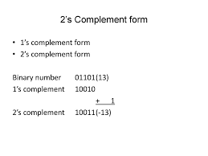

"The ones' complement of a binary numb er is defined as the value obtained by inverting all the bits in the binary representation of the number (swappin g 0s for 1s and vice versa). The ones' complement of the number then behaves like the negative of the original nu mber in some arithmetic operations."